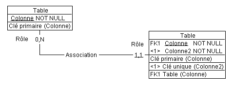
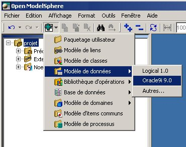

Modélisation de données
Les concepts de base
 Table : représente une table relationnelle.
Table : représente une table relationnelle.
 Colonne : représente un attribut de la table.
Colonne : représente un attribut de la table.
 Association : la représentation graphique de la relation
entre deux tables au plus.
Association : la représentation graphique de la relation
entre deux tables au plus.
 Rôle : chaque côté de l’association. Qualifie l’implication
de chaque table dans l’association.
Rôle : chaque côté de l’association. Qualifie l’implication
de chaque table dans l’association.
Multiplicité du rôle : le nombre d’occurrences de la
table liée.
Navigabilité du rôle : indique si la table est parent
ou enfant.
Type de contrainte du rôle : mécanisme d’implémentation
de l’intégrité référentielle.
Clé : primaire  , unique
, unique  ou étrangère
ou étrangère  .
.
Dépendance de la clé : pour les clés primaires et
uniques.
Contrainte référencée : source de contrainte de la
clé étrangère.
Peut être dans une clé primaire ou unique.

Créer un modèle de données
À la base, un modèle relationnel de données, ou schéma, se compose de tables comportant
des colonnes non décomposables et des associations binaires. On se sert d'un
modèle de données comme moyen de communication pour bâtir et décrire des bases
de données.
Il est possible de créer un modèle de données à partir du menu principal, de la fenêtre
Explorateur ou de la barre d’outils Édition.
- Du menu principal, choisissez Edition > Ajouter > Modèle de données > le
système cible de votre choix.
- De la fenêtre Explorateur, cliquez à droite sur projet. Un menu contextuel
apparaîtra. De ce dernier, choisissez Ajouter > Modèle de données > le système
cible de votre choix.
- De la barre d’outils Édition, cherchez l’outil Ajouter
 , cliquez-le et choisissez
Modèle de données > le système cible de votre choix.
, cliquez-le et choisissez
Modèle de données > le système cible de votre choix.

Le diagramme est fourni par défaut avec le modèle de données. Voici la façon de l’afficher
:
- Cliquez sur la poignée
 située à coté du modèle de données dans la fenêtre
d’explorateur, le Diagramme apparaîtra.
située à coté du modèle de données dans la fenêtre
d’explorateur, le Diagramme apparaîtra.
- Cliquez à droite sur le Diagramme.
- Du menu contextuel, choisissez Afficher le diagramme.
Le diagramme apparaît du côté droit de la fenêtre Explorateur. Si le diagramme est
vide, cliquez à droite à l’intérieur de la fenêtre du diagramme et quand le menu contextuel
apparaîtra, cliquez sur Ajouter les représentations graphiques manquantes.
Si vous ne voulez pas que le modèle de données soit automatiquement
créé avec un diagramme, changez les configurations déjà en place. Voir Modification des options.
Pour ajouter un système cible, voir Le système cible.